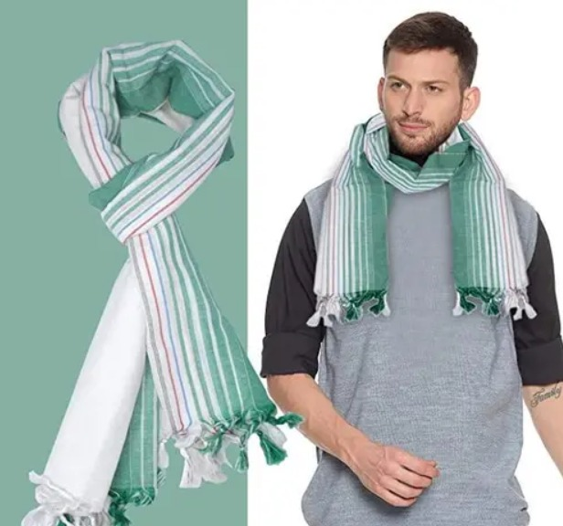

The Angochha :
is a narrow piece of cloth worn by men in Chhattisgarh, primarily as a protective headgear or a shoulder cloth. It serves both practical and ceremonial purposes, offering protection against the harsh sun in rural areas. The Angochha is typically handwoven, featuring simple patterns and natural dyes, and is often paired with a Dhoti or Pichhori. In addition to its practical use, the Angochha holds cultural significance, especially during religious ceremonies and festivals. It is an essential accessory in the traditional male attire, symbolising dignity and respect. It is often worn during special occasions, such as weddings or local festivals, adding an extra layer of tradition to the outfit.